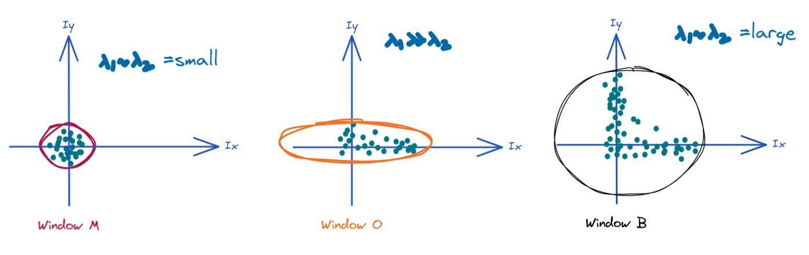

Aenean ornare velit lacus, ac varius enim lorem ullamcorper dolore aliquam.
Harris corner detector is one of the methods in computer vision to find corners in an image. Corners in an image act as good/stable features (interest points) to track because they are robuts to change in different view points, rotation (rotationaly invariant), translation and illumination. In this section we will use all the maths we went through in previous sections to derive the corner response measure which helps to find corners in an image.
Exactly at the corner the gradient is not well defined. However, near corners gradients have two different values i.e if we take a window (a small region compared to the hole image) and shift it any direction which should yield a large change in appearance. To understand this better let's use the image A below,

Image A has three different colored (black, maroon and orange) windows looking at different regions in an image. For the sake of convenience let's name the coloured windows - Let maroon coloured window be widnow M, black coloured window be window B and orange coloured window be window O. The green coloured dashed windows represent small change in the position of the respective windows. Next, let's classify each window based on the region in the image it is looking on,
Harris corner detector gives a mathematical approach for determining which of the region is the window looking at.
Let's assume we have an Image \large I and we compute the error \large E for a small shift \large (u, v) by calculating the sum of squared error of the intensity over a window as shown below,
What we would like to model is how the error function behaves for a small shifts \large (u, v) near \large (0, 0) . Idealy, we would like to see a significant change even for a small shifts of \large (u, v) telling us if the window is looking at a corner. How do you predict the value of the function for small shift? Answer: Taylor Expansion, a second order taylor expansion of \large E(u, v) about \large (0, 0) .
In the Taylor expansion section I had explained how to approximate the function depending on a single variable using polynomials. Here, the function \large E(u, v) depends on two variables \large (u, v) and if you had a subject in undergrad on multivariable calculus you might remember how to compute gradient (derivative) of function depending on multiple variables. It is basically the sum of partial derivatives of the function with it's dependent variables. As shown below,
In the above equation \large f_{x_{1}} and \large f_{x_{2}} are the partial derivatives of the function with respect to two independent variables \large x_{1} and \large x_{2}. The same can be extended for second order taylor expansion for approximating \large E(u, v) given below,
Let's convert the above into matrix representation as below if you remember in Ellipse tutorial article I had mentioned how we can represent a quadratic equation in matrix representation. Same, can be followed here,
The above statment is the second order approximation of the error function \large E(u, v). Next we expand \large E_{u}, E_{v}, E_{uu}, E_{vv} and \large E_{uv} in the above equation. As a reminder, \large E_u represents derivative of the error term with respect to \large u. Similarly, \large E_v represents derivative of the error term with respect to \large v. The second order derivatives of \large E are \large E_{uu}, \large E_{vv} and \large E_{uv}.
\large u is in the same direction as \large x so if you are computing the image gradient with respect to \large u it same as computing the image gradient respect to \large u. Similarly, we can compute for \large v as,
Using chain rule in calculus we can compute the second order derivatives for as given below,
Now simplifying the above equations of first derivative and second derivative by substituting the value \large (0, 0) in place of \large (u, v) as we are approximating the error function near \large (0, 0). The equations are simplied as below,
Now substituting the above simplied equation in the matrix representation of the second order approximation of the error function yields us the following approximation given below,
Simplifying the above equation even further and using shorthand representation for I_x^{2}(x,y) and I_y^{2}(x,y) as \large I_x^{2} and \large I_y^{2} we rewrite the above equation as,
Assuming the window function to be the simplest case \large w = 1 we can rewrite the equation as,
\large M is a symmeteric matrix and is known as second order structure tensor. In the next section of this tutorial we will see how the structure tensor relates to ellipse equation we went through in the section II. Eigen Application: Ellipse.
In the end of the previous section the error function \large E(u, v) in the form of structure tensor \large M can be thought as an equation of an ellipse and be rewritten as below,
General equation of the ellipse,
There is a starking resemblance between the two eqations above but the only difference is that the general equation of an ellipse is for the standard cartesian coordinate system where as the error function \large E(u, v) is defined for \large u and \large v space. So, to compute the major and minor axsis of an ellipse we need to compute the eigen values (\large \lambda_1, \lambda_2) for \large M. This can be done by diagonalizing \large M as shown below (In depth explantion of this is provided in this article II. Eigen Application: Ellipse),
The relation between the eigen values and the length of the major & minor axis is given below. Where \large a is major axsis and \large b is minor axsis if \large \lambda_1 < \lambda_2.
To relate the length of the major and minor axsis of an ellipse to the determination of a corner in a window, let's look at the windows (window M, window O and window B) initially used to get the basic idea of harris corner detection algorithm.

From this we can make the following inference, window M has has no change in gradient in any direction because all the intensities are the same whereas in window O the change in gradient is present in along the edge only which is x-gradient. Finally, window B has a gradients in both x and y direction. Now, if we fit an ellipse to each of the patch gradients we will get the following diagrams below, (NOTE: This is just illustration not accuractely calculated)

The relation between eigen values and determining whether a patch has a corner or not is basically the following scenarios.
Now, let's compute the measure of corner response which is given by the equation below. Where \large k is a free parameter and \large \lambda_1 and
Different scenarios for \large R are given below,
Finally, if you threshold on \large R then you can compute the corner like features in an image. This is entire Harris corner detection algorithm. Many of the other
corner detection algorithm such as Shi-Tomasi corner detection algorithm (used in cv2.goodFeaturesToTrack()) are variant of harris corner detection algorithm. Finally, in the last
section we will write down the algorithm.
Aenean ornare velit lacus, ac varius enim lorem ullamcorper dolore aliquam.

Aenean ornare velit lacus, ac varius enim lorem ullamcorper dolore aliquam.

Aenean ornare velit lacus, ac varius enim lorem ullamcorper dolore aliquam.
Sed varius enim lorem ullamcorper dolore aliquam aenean ornare velit lacus, ac varius enim lorem ullamcorper dolore. Proin sed aliquam facilisis ante interdum. Sed nulla amet lorem feugiat tempus aliquam.